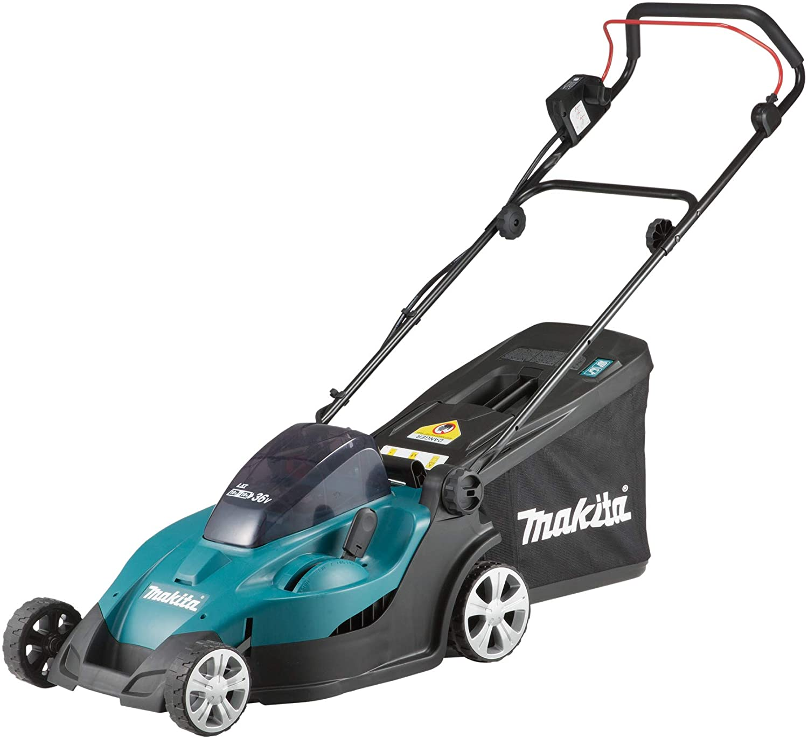

Makita DLM431Z
El Makita DLM431Z és un tallagespa a bateria de 36 V, ideal per a jardins de mida mitjana. Amb una amplada de tall de 43 cm, aquest tallagespa ofereix un rendiment potent i eficient, permetent-te cuidar el teu jardí sense preocupar-te pels cables o el soroll. A més, el DLM431Z és compatible amb bateries de liti-ion de 18 V, facilitant el seu ús amb altres eines Makita.
El sistema de doble palanca d'ajust d'alçada de tall del Makita DLM431Z permet adaptar el tall a les teves necessitats específiques, amb 13 posicions diferents d'alçada de tall entre 20 i 75 mm. El seu disseny lleuger i les rodes amb coixinets de bola asseguren una maniobrabilitat fàcil i un transport còmode.
No esperis més i adquireix el teu Makita DLM431Z per gaudir d'un jardí perfecte sense esforç.
Compra ara